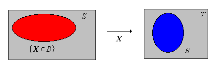

In this section we discuss probability spaces from the more advanced point of view of measure theory. The discussion is divided into two parts: first those concepts that are shared rather equally between probability theory and general measure theory, and second those concepts that are for the most part unique to probability theory. In particular, it's a mistake to think of probability theory as a mere branch of measure theory. Probability has its own notation, terminology, point of view, and applications that makes it an incredibly rich subject on its own.
Our first discussion concerns topics that were discussed in in the section on positive measures. So no proofs are necessary, but you will notice that the notation, and in some cases the terminology, is very different.
First we review the definition of a probability space, the mathematical model of a random experiment.
A probability space \((S, \ms S, \P)\), consists of three essential parts:
Often the special notation \( (\Omega, \ms{F}, \P) \) is used for a probability space in the literature—the symbol \( \Omega \) for the set of outcomes is intended to remind us that these are all possible outcomes. However in this text, we don't insist on the special notation, and use whatever notation seems most appropriate in a given context.
In probability, \(\sigma\)-algebras are not just important for theoretical and foundational purposes, but are important for practical purposes as well. A \(\sigma\)-algebra can be used to specify partial information about an experiment—a concept of fundamental importance. Specifically, suppose that \(\ms A\) is a collection of events in the experiment, and that we know whether or not \(A\) occurred for each \(A \in \ms A\). Then in fact, we can determine whether or not \(A\) occurred for each \(A \in \sigma(\ms A)\), the \(\sigma\)-algebra generated by \(\ms A\).
Next recall that a random variable for our experiment is a measurable function from the sample space into another measurable space.
Suppose that \( (S, \ms S, \P) \) is a probability space and that \( (T, \ms T) \) is another measurable space. A random variable \( X \) with values in \( T \) is a measurable function from \( S \) into \( T \).
Measurability ensures that \(\{X \in A\} = \{s \in S: X(s) \in A\}\) (the inverse image of \( A \) under \( X \)) is a valid event (that is, a member of the \(\sigma\)-algebra \(\ms S\)) for each \(A \in \ms T\). By the change of variables theorem, the mapping \(A \mapsto \P(X \in A)\), is a positive measure on \((T, \ms T)\), and in fact is a probability measure, since \( \P(X \in T) = \P(S) = 1 \).

If we observe the value of \(X\), then we know whether or not each event in \(\sigma(X)\) has occurred. More generally, we can construct the \( \sigma \)-algebra associated with any collection of random variables.
suppose that \( (T_i, \ms T_i) \) is a measurable space for each \( i \) in a nonempty index set \( I \), and that \(X_i\) is a random variable with values in \( T_i \) for each \( i \in I \). The \( \sigma \)-algebra generated by \( \{X_i: i \in I\} \) is \[ \sigma\{X_i: i \in I\} = \sigma\left\{\{X \in A_i\}: A_i \in \ms T_i, \; i \in I\right\} \]
If we observe the value of \(X_i\) for each \(i \in I\) then we know whether or not each event in \(\sigma\{X_i: i \in I\}\) has occurred. This idea is very important in the study of stochastic processes.
Suppose that \( (S, \ms S, \P) \) is a probability space.
Define the following collections of events:
The collection \( \ms D \) is a sub \( \sigma \)-algebra of \( \ms S \).
In our discussion of independence, we showed that \( \ms D \) is also a collection of independent events.
Intuitively, equivalent events or random variables are those that are indistinguishable from a probabilistic point of view. Recall first that the symmetric difference between events \( A \) and \( B \) is \( A \bigtriangleup B = (A \setminus B) \cup (B \setminus A) \); it is the event that occurs if and only if one of the events occurs, but not the other, and corresponds to exclusive or. We start with the definition for events:
Events \(A\) and \(B\) are equivalent if \( A \bigtriangleup B \in \ms N \), and we denote this by \( A \equiv B \). The relation \( \equiv \) is an equivalence relation on \( \ms S \). That is, for \( A, \, B, \, C \in \ms S \),
Thus \(A \equiv B\) if and only if \(\P(A \bigtriangleup B) = \P(A \setminus B) + \P(B \setminus A) = 0\) if and only if \(\P(A \setminus B) = \P(B \setminus A) = 0\). The equivalence relation \( \equiv \) partitions \( \ms S \) into disjoint classes of mutually equivalent events. Equivalence is preserved under the set operations.
Suppose that \( A, \, B \in \ms S \). If \( A \equiv B \) then \( A^c \equiv B^c \).
Suppose that \( A_i, \, B_i \in \ms S \) for \( i \) in a countable index set \( I \). If \( A_i \equiv B_i \) for \( i \in I \) then
Equivalent events have the same probability.
If \( A, \, B \in \ms S \) and \(A \equiv B\) then \(\P(A) = \P(B)\).
The converse trivially fails, and a counterexample is given in . However, the null and almost sure events do form equivalence classes.
Suppose that \( A \in \ms S \).
We can extend the notion of equivalence to random variables taking values in the same space. Thus suppose that \( (T, \ms T) \) is another measurable space. If \( X \) and \( Y \) are random variables with values in \( T \), then \( (X, Y) \) is a random variable with values in \( T \times T \), which is given the usual product \( \sigma \)-algebra \( \ms T \times \ms T \). We assume that \((T, \ms T)\) has a measurable diagonal so that \( D = \{(x, x): x \in T\} \in \ms T \times \ms T \), an assumption that is almost always true in applications.
Random variables \(X\) and \(Y\) taking values in \(T\) are equivalent if \( \P(X = Y) = 1 \). Again we write \( X \equiv Y \). The relation \( \equiv \) is an equivalence relation on the collection of random variables that take values in \(T\). That is, for random variables \( X \), \( Y \), and \( Z \) with values in \( T \),
So the collection of random variables with values in \( T \) is partitioned into disjoint classes of mutually equivalent variables.
Suppose that \(X\) and \(Y\) are random variables taking values in \(T\) and that \( X \equiv Y \). Then
Again, the converse to part (b) fails with a passion, and gives a counterexample. It often happens that a definition for random variables subsumes the corresponding definition for events, by considering the indicator variables of the events. So it is with equivalence.
Suppose that \(A, \, B \in \ms S\). Then \(A \equiv B\) if and only if \(\bs 1_A \equiv \bs 1_B\).
Equivalence is preserved under a deterministic transformation of the variables. For the next result, suppose that \( (U, \ms U) \) is yet another measurable space, along with \( (T, \ms T) \).
Suppose \( X, \, Y \) are random variables with values in \( T \) and that \( g: T \to U \) is measurable. If \(X \equiv Y\) then \( g(X) \equiv g(Y) \).
Suppose again that \( (S, \ms S, \P) \) is a probability space corresponding to a random experiment. Let \( \ms V \) denote the collection of all real-valued random variables for the experiment, that is, all measurable functions from \( S \) into \( \R \). With the usual definitions of addition and scalar multiplication, \( (\ms V, +, \cdot) \) is a vector space. However, in probability theory, we often do not want to distinguish between random variables that are equivalent, so it's nice to know that the vector space structure is preserved when we identify equivalent random variables. Formally, let \( [X] \) denote the equivalence class generated by a real-valued random variable \( X \in \ms V \), and let \( \ms W \) denote the collection of all such equivalence classes. In modular notation, \( \ms W\) is the set \(\ms V \big/ \equiv \). We define addition and scalar multiplication on \( \ms{V} \) by \[ [X] + [Y] = [X + Y], \; c [X] = [c X]; \quad [X], \; [Y] \in \ms{V}, \; c \in \R \]
\( (\ms W, +, \cdot) \) is a vector space.
Often we don't bother to use the special notation for the equivalence class associated with a random variable. Rather, it's understood that equivalent random variables represent the same object. Spaces of functions in a general measure space were studied previously and spaces of random variables will be further studied later.
Suppose again that \( (S, \ms S, \P) \) is a probability space, and that \( \ms N \) denotes the collection of null events, as above. Suppose that \( A \in \ms N \) so that \( \P(A) = 0 \). If \( B \subseteq A \) and \( B \in \ms S \), then we know that \( \P(B) = 0 \) so \( B \in \ms N \) also. However, in general there might be subsets of \( A \) that are not in \( \ms S \). This leads naturally to the following definition.
The probability space \( (S, \ms S, \P) \) is complete if \( A \in \ms N \) and \( B \subseteq A \) imply \( B \in \ms S \) (and hence \( B \in \ms N \)).
So the probability space is complete if every subset of an event with probability 0 is also an event (and hence also has probability 0). From the general theory of positive measres, every \( \sigma \)-finite measure space that is not complete can be completed. So in particular a probability space that is not complete can be completed. To review the construction, recall that the equivalence relation \( \equiv \) on \( \ms S \) in definition is extended to \( \ms P(S) \) (the power set of \( S \)).
For \( A, \, B \subseteq S \), define \( A \equiv B \) if and only if there exists \( N \in \ms N \) such that \( A \bigtriangleup B \subseteq N \). The relation \( \equiv \) is an equivalence relation on \( \ms P(S) \).
Here is how the probability space is completed:
Let \( \ms S_0 = \{A \subseteq S: A \equiv B \text{ for some } B \in \ms S \} \). For \( A \in \ms S_0 \), define \( \P_0(A) = \P(B) \) where \( B \in \ms S \) and \( A \equiv B \). Then
Our next discussion concerns the construction of probability spaces that correspond to specified distributions. To set the stage, suppose that \( (S, \ms S, \P) \) is a probability space. If we let \( X \) denote the identity function on \( S \), so that \( X(x) = x \) for \( x \in S \), then \( \{X \in A\} = A \) for \( A \in \ms S \) and hence \( \P(X \in A) = \P(A) \). That is, \( \P \) is the probability distribution of \( X \). We have seen this before—every probability measure can be thought of as the distribution of a random variable. The next result shows how to construct a probability space that corresponds to a sequence of independent random variables with specified distributions.
Suppose \( n \in \N_+ \) and that \( (S_i, \ms S_i, \P_i) \) is a probability space for \( i \in \{1, 2, \ldots, n\} \). The corresponding product measure space \( (S, \ms S, \P) \) is a probability space. If \( X_i: S \to S_i \) is the \( i \)th coordinate function on \( S\) so that \( X_i(\bs x) = x_i \) for \( \bs x = (x_1, x_2, \ldots, x_n) \in S \) then \( (X_1, X_2, \ldots, X_n) \) is a sequence of independent random variables on \( (S, \ms S, \P) \), and \( X_i \) has distribution \( \P_i \) on \( (S_i, \ms S_i) \) for each \( i \in \{1, 2, \ldots, n \} \).
Of course, the existence of the product space \( (S, \ms S, \P) \) follows immediately from the more general result for products of positive measure spaces. Recall that \( S = \prod_{i=1}^n S_i \) and that \( \ms S \) is the \( \sigma \)-algebra generated by sets of the from \( \prod_{i=1}^n A_i \) where \( A_i \in \ms S_i \) for each \( i \in \{1, 2, \ldots, n\} \). Finally, \( \P \) is the unique positive measre on \( (S, \ms S) \) satisfying \[ \P\left(\prod_{i=1}^n A_i\right) = \prod_{i=1}^n \P_i(A_i) \] where again, \( A_i \in \ms S_i \) for each \( i \in \{1, 2, \ldots, n\} \). Clearly \( \P \) is a probability measure since \( \P(S) = \prod_{i=1}^n \P_i(S_i) = 1 \). Suppose that \( A_i \in \ms S_i \) for \( i \in \{1, 2, \ldots, n\} \). Then \( \{X_1 \in A_1, X_2 \in A_2 \ldots, X_n \in A_n\} = \prod_{i=1}^n A_i \in \ms S\). Hence \[ \P(X_1 \in A_1, X_2 \in A_2, \ldots, X_n \in A_n) = \prod_{i=1}^n \P_i(A_i) \] If we fix \( i \in \{1, 2, \ldots, n\} \) and let \( A_j = S_j \) for \( j \ne i \), then the displayed equation give \( \P(X_i \in A_i) = \P_i(A_i) \), so \( X_i \) has distribution \( \P_i \) on \( (S_i, \ms S_i) \). Returning to the displayed equation we have \[ \P(X_1 \in A_1, X_2 \in A_2, \ldots, X_n \in A_n) = \prod_{i=1}^n \P(X_i \in A_i) \] so \( (X_1, X_2, \ldots, X_n) \) are independent.
Intuitively, the given probability spaces correspond to \( n \) random experiments. The product space then is the probability space that corresponds to the experiments performed independently. When modeling a random experiment, if we say that we have a finite sequence of independent random variables with specified distributions, we can rest assured that there actually is a probability space that supports this statement
We can extend the last result to an infinite sequence of probability spaces. Suppose that \( (S_i, \ms S_i) \) is a measurable space for each \( i \in \N_+ \). Recall that the product space \( \prod_{i=1}^\infty S_i \) consists of all sequences \( \bs x = (x_1, x_2, \ldots) \) such that \( x_i \in S_i \) for each \( i \in \N_+ \). The corresponding product \( \sigma \)-algebra \( \ms S \) is generated by the collection of cylinder sets. That is, \( \ms S = \sigma(\ms B) \) where \[ \ms B = \left\{\prod_{i=1}^\infty A_i: A_i \in \ms S_i \text{ for each } i \in \N_+ \text{ and } A_i = S_i \text{ for all but finitely many } i \in \N_+\right\} \]
Suppose that \( (S_i, \ms S_i, \P_i) \) is a probability space for \(i \in \N_+ \). Let \( (S, \ms S) \) denote the product measurable space so that \( \ms S = \sigma(\ms B) \) where \( \ms B \) is the collection of cylinder sets. Then there exists a unique probability measure \( \P \) on \( (S, \ms S) \) that satisfies \[ \P\left(\prod_{i=1}^\infty A_i\right) = \prod_{i=1}^\infty \P_i(A_i), \quad \prod_{i=1}^\infty A_i \in \ms B\] If \( X_i: S \to S_i \) is the \( i \)th coordinate function on \( S\) for \( i \in \N_+ \), so that \( X_i(\bs x) = x_i \) for \( \bs x = (x_1, x_2, \ldots) \in S \), then \( (X_1, X_2, \ldots) \) is a sequence of independent random variables on \( (S, \ms S, \P) \), and \( X_i \) has distribution \( \P_i \) on \( (S_i, \ms S_i) \) for each \( i \in \N_+ \).
The proof is similar to the one in for positive measure spaces in the section on existence and uniqueness in the chapter on foundations. First recall that the collection of cylinder sets \( \ms B \) is a semi-algebra. We define \( \P: \ms B \to [0, 1] \) as in the statement of the theorem. Note that all but finitely many factors are 1. The consistency conditions are satisfied, so \( \P \) can be extended to a probability measure on the algebra \( \ms A \) generated by \( \ms B \). That is, \( \ms A \) is the collection of all finite, disjoint unions of cylinder sets. The standard extension theorem and uniqueness theorem now apply, so \( \P\) can be extended uniquely to a measure on \( \ms S = \sigma(\ms A)\). The proof that \( (X_1, X_2, \ldots) \) are independent and that \( X_i \) has distribution \( \P_i \) for each \( i \in \N_+ \) is just as in the previous theorem.
Once again, if we model a random process by starting with an infinite sequence of independent random variables, we can be sure that there exists a probability space that supports this sequence. The particular probability space constructed in the last theorem is called the canonical probability space associated with the sequence of random variables. Note also that it was important that we had probability measures rather than just general positive measures in the construction, since the infinite product \( \prod_{i=1}^\infty \P_i(A_i) \) is always well defined. The next section on stochastic processes continues the discussion of how to construct probability spaces that correspond to a collection of random variables with specified distributional properties.
Our next discussion concerns topics that are for the most part unique to probability theory and do not have simple analogies in general measure theory.
As usual, suppose that \( (S, \ms S, \P) \) is a probability space. We have studied the independence of collections of events and the independence of collections of random variables. A more complete and general treatment results if we define the independence of collections of collections of events, and most importantly, the independence of collections of \( \sigma \)-algebras. This extension actually occurred already, when we went from independence of a collection of events to independence of a collection of random variables, but we did not note it at the time. In spite of the layers of set theory, the basic idea is the same.
Suppose that \( \ms A_i \) is a collection of events for each \( i \) in an index set \( I \). Then \( \ms A = \{\ms A_i: i \in I\} \) is independent if and only if for every choice of \( A_i \in \ms A_i \) for \( i \in I \), the collection of events \(\{ A_i: i \in I\} \) is independent. That is, for every finite \(J \subseteq I \), \[ \P\left(\bigcap_{j \in J} A_j\right) = \prod_{j \in J} \P(A_j) \]
As noted above, independence of random variables, as we defined previously, is a special case of our new definition.
Suppose that \( (T_i, \ms T_i) \) is a measurable space for each \( i \) in a nonempty index set \( I \), and that \( X_i \) is a random variable taking values in a set \( T_i \) for each \( i \in I \). The independence of \( \{X_i: i \in I\} \) is equivalent to the independence of \( \{\sigma(X_i): i \in I\} \).
Independence of events is also a special case of the new definition, and thus our new definition really does subsume our old one.
Suppose that \( A_i \) is an event for each \( i \in I \). The independence of \( \{A_i: i \in I\} \) is equivalent to the independence of \( \{\ms A_i: i \in I\} \) where \( \ms A_i = \sigma\{A_i\} = \{S, \emptyset, A_i, A_i^c\} \) for each \( i \in I \).
For every collection of objects that we have considered (collections of events, collections of random variables, collections of collections of events), the notion of independence has the basic inheritance property.
Suppose that \( \ms A \) is a collection of collections of events.
Our most important collections are \( \sigma \)-algebras, and so we are most interested in the independence of a collection of \( \sigma \)-algebras. The next result allows us to go from the independence of certain types of collections to the independence of the \( \sigma \)-algebras generated by these collections. To understand the result, you will need to review the definitions and theorems concerning \( \pi \)-systems and \( \lambda \)-systems. The proof uses Dynkin's \( \pi \)-\( \lambda \) theorem, named for Eugene Dynkin.
Suppose that \( \ms A_i \) is a collection of events for each \( i \) in a nonempty index set \( I \), and that \( \ms{A_i} \) is a \( \pi \)-system for each \( i \in I \). If \( \left\{\ms A_i: i \in I\right\} \) is independent, then \( \left\{\sigma(\ms A_i): i \in I\right\} \) is independent.
In light of the previous result, it suffices to consider a finite set of collections. Thus, suppose that \( \{\ms A_1, \ms A_2, \ldots, \ms A_n\} \) is independent. Now, fix \( A_i \in \ms A_i \) for \( i \in \{2, 3, \ldots, n\} \) and let \( E = \bigcap_{i=2}^n A_i \). Let \( \ms{L} = \{B \in \ms S: \P(B \cap E) = \P(B) \P(E)\} \). Trivially \( S \in \ms{L} \) since \( \P(S \cap E) = \P(E) = \P(S) \P(E) \). Next suppose that \( A \in \ms{L} \). Then \[ \P(A^c \cap E) = \P(E) - \P(A \cap E) = \P(E) - \P(A) \P(E) = [1 - \P(A)] \P(E) = \P(A^c) \P(E) \] Thus \( A^c \in \ms{L} \). Finally, suppose that \( \{A_j: j \in J\} \) is a countable collection of disjoint sets in \( \ms{L} \). Then \[ \P\left[\left(\bigcup_{j \in J} A_j \right) \cap E \right] = \P\left[ \bigcup_{j \in J} (A_j \cap E) \right] = \sum_{j \in J} \P(A_j \cap E) = \sum_{j \in J} \P(A_j) \P(E) = \P(E) \sum_{j \in J} \P(A_j) = \P(E) \P\left(\bigcup_{j \in J} A_j \right) \] Therefore \( \bigcup_{j \in J} A_j \in \ms{L} \) and so \( \ms{L} \) is a \( \lambda \)-system. Trivially \( \ms{A_1} \subseteq \ms{L} \) by the original independence assumption, so by the \( \pi \)-\( \lambda \) theorem, \( \sigma(\ms A_1) \subseteq \ms{L} \). Thus, we have that for every \( A_1 \in \sigma(\ms A_1) \) and \( A_i \in \ms A_i \) for \( i \in \{2, 3, \ldots, n\} \), \[ \P\left(\bigcap_{i=1}^n A_i \right) = \prod_{i=1}^n \P(A_i) \] Thus we have shown that \( \left\{\sigma(\ms A_1), \ms A_2, \ldots, \ms A_n\right\} \) is independent. Repeating the argument \( n - 1 \) additional times, we get that \( \{\sigma(\ms A_1), \sigma(\ms A_2), \ldots, \sigma(\ms A_n)\} \) is independent.
The next result is a rigorous statement of the strong independence that is implied the independence of a collection of events.
Suppose that \( \ms A \) is an independent collection of events, and that \( \left\{\ms B_j: j \in J\right\} \) is a partition of \( \ms A \). That is, \( \ms B_j \cap \ms B_k = \emptyset \) for \( j \ne k \) and \( \bigcup_{j \in J} \ms B_j = \ms A \). Then \( \left\{\sigma(\ms B_j): j \in J\right\} \) is independent.
Let \( \ms B_j^* \) denote the set of all finite intersections of sets in \( \ms B_j \), for each \( j \in J \). Then clearly \( \ms B_j^* \) is a \( \pi \)-system for each \( j \), and \( \left\{\ms B_j^*: j \in J\right\} \) is independent. By , \( \left\{\sigma(\ms B_j^*): j \in J\right\} \) is independent. But clearly \( \sigma(\ms B_j^*) = \sigma(\ms B_j) \) for \( j \in J \).
Let's bring the result down to earth. In the section on independence, you were asked to show that if \( A, B, C, D \) are independent events then, for example, \( A \cup B^c \) and \( C^c \cup D^c \) are independent. This is a consequence of the much stronger statement that the \( \sigma \)-algebras \( \sigma\{A, B\} \) and \( \sigma\{C, D\} \) are independent.
Suppose next that \((T, \ms T)\) is a measurable space and that \(X\) is a random variable for our experiment with values in \(T\). Recall that \(X\) is independent of itself if and only if \(\P(X \in A) = 0\) or \(\P(X \in A) = 1\) for every \(A \in \ms T\). Recall also that if \(X\) is constant with probability 1 then \(X\) is independent of itself. You might think that the converse is true. That is, if \(X\) is not with probability 1 constant, then there must exist disjoint sets \(A, \, B \in \ms T\) with \(\P(X \in A) \gt 0\) and \(\P(X \in B) \gt 0\) so that \(X\) is not independent of itself. But alas, you would be wrong. The problem is that independence depends very much on the underlying \(\sigma\)-algebra, and in particular, \(X\) being constant with probability 1 makes no sense unless \(\ms T\) is rich enougth that \(\{x\} \in \ms T\) for every \(x \in T\). But that condition alone is not enough, as the following counterexample shows.
Suppose that \(T\) is an uncountable set (\(\R\) would do), and let \(\ms T\) be the \(\sigma\)-algebra generated by the collection of singletons \(\{\{x\}: x \in T\}\). So \(\ms T\) is the \(\sigma\)-algebra of countable and co-countable sets: \[\ms T = \{A \subseteq T: A \text{ is countable or } A^c \text{ is countable}\}\] Suppose that \(X\) has probability distribution given by \(\P(X \in A) = 0\) if \(A\) is countable and \(\P(X \in A) = 1\) if \(A\) is uncountable. Then \(X\) is independent of itself but is not with probability 1 constant.
Let \(P\) denote the distribution of \(X\) given above. We just need to show that \(P\) is a valid probability measure on \((T, \ms T)\), and for this we just need to show countable additivity. Suppose that \(\{A_i: i \in I\}\) is a countable collection of disjoint sets in \(\ms T\). Then either \(A_i\) is countable for every \(i \in I\) or \(A_j\) is uncountable for exactly one \(j \in I\). In the first case, \(\bigcup_{i \in I} A_i\) is countable so \[P\left(\bigcup_{i \in I} A_i\right) = \sum_{i \in I} P(A_i) = 0\] and in the second case \(\bigcup_{i \in I} A_i\) is uncountable so \[P\left(\bigcup_{i \in I} A_i\right) = \sum_{i \in I} P(A_i) = 1\] Note that every uncountable set is an atom of the probability distribution.
However, the converse is true in our two most important special cases
Suppose that \((T, \ms T)\) is a discrete measurable space so that \(T\) is countable and \(\ms T\) the collection of all subsets of \(T\). If \(X\) is a random variable with values in \(T\) that is independent of itself then \(X\) is constant with probabiltiy 1.
If \(X\) is independent of itself then \(\P(X = x) = 0\) or \(\P(X = x) = 1\) for each \(x \in T\). But \(\sum_{x \in T} \P(X = x) = 1\) so we must have \(\P(X = x_0) = 1\) for exactly one \(x_0 \in T\).
For \(n \in \N_+\), recall that the \(n\)-dimensional Euclidean space is \((\R^n, \ms R^n)\) where \(\ms R^n\) is the Borel \(\sigma\)-algebra. If \(X\) is a random variable with values in \(\R^n\) that is independent of itself then \(X\) is constant with probability 1.
Consider \(n = 1\). The distribution function \(F\) of \(X\) is given by \(F(x) = \P(X \le x)\) for \(x \in \R\). Clearly \(F\) is increasing, and by the continuity theorems, \(F\) is continuous from the right and \(F(x) \to 1\) as \(x \to \infty\). If \(X\) is independent of itself then \(F(x) = 0\) or \(F(x) = 1\) for every \(x \in \R\). It follows that there exists a unique \(x_0 \in \R\) such that \(F(x) = 0\) for \(x \lt x_0\) and \(F(x) = 1\) for \(x \ge x_0\). That is, \(\P(X \lt x_0) = 0\) and \(\P(X \le x_0) = 1\). Hence \(\P(X = x_0) = 1\).
For \(n \in \{2, 3, \ldots\}\), our random variable \(\bs X = (X_1, X_2, \ldots, X_n)\) where \(X_i\) takes values in \(\R\) for each \(i \in \{1, 2, \ldots, n\}\). If \(\bs X\) is independent of itself then so is \(X_i\) for each \(i\). It follows that \(X_i\) is constant with probability 1 for each \(i\) and hence \(\bs X\) is constant with probability 1.
As usual, suppose that \( (S, \ms S, \P) \) is a probability space corresponding to a random experiment Roughly speaking, a sequence of events or a sequence of random variables is exchangeable if the probability law that governs the sequence is unchanged when the order of the events or variables is changed. Exchangeable variables arise naturally in sampling experiments and many other settings, and are a natural generalization of a sequence of independent, identically distributed (IID) variables. Conversely, it turns out that any exchangeable sequence of variables can be constructed from an IID sequence. First we give the definition for events:
Suppose that \(\ms A = \{A_i: i \in I\}\) is a collection of events, where \(I\) is a nonempty index set. Then \( \ms A \) is exchangeable if the probability of the intersection of a finite number of the events depends only on the number of events. That is, if \(J\) and \(K\) are finite subsets of \(I\) and \(\#(J) = \#(K)\) then \[\P\left( \bigcap_{j \in J} A_j\right) = \P \left( \bigcap_{k \in K} A_k\right)\]
Exchangeability has the same basic inheritance property that we have seen before.
Suppose that \(\ms A\) is a collection of events.
For a collection of exchangeable events, the inclusion exclusion law for the probability of a union is much simpler than the general version.
Suppose that \(n \in \N_+\) and that \(\{A_1, A_2, \ldots, A_n\}\) is an exchangeable collection of events. For \(J \subseteq \{1, 2, \ldots, n\}\) with \(\#(J) = k\), let \(p_k = \P\left( \bigcap_{j \in J} A_j\right)\). Then \[\P\left(\bigcup_{i = 1}^n A_i\right) = \sum_{k=1}^n (-1)^{k-1} \binom{n}{k} p_k\]
The inclusion-exclusion rule gives \[\P \left( \bigcup_{i \in I} A_i \right) = \sum_{k = 1}^n (-1)^{k - 1} \sum_{J \subseteq I, \; \#(J) = k} \P \left( \bigcap_{j \in J} A_j \right)\] But \(p_k = \P\left( \bigcap_{j \in J} A_j\right)\) for every \( J \subseteq \{1, 2, \ldots, n\} \) with \( \#(J) = k \), and there are \( \binom{n}{k} \) such subsets.
The concept of exchangeablility can be extended to random variables in the natural way. Suppose that \( (T, \ms T) \) is a measurable space.
Suppose that \(\ms A \) is a collection of random variables, each taking values in \(T\). The collection \(\ms A\) is exchangeable if for every \(n \in \N_+\), any sequence of \(n\) ramdom variables in \(\ms A\) has the same distribution as any other sequence of \(n\) random variables in \(\ms A\).
Once again, exchangeability has the same basic inheritance property as a collection of independent variables.
Suppose that \(\ms A\) is a collection of random variables, each taking values in \( T \).
Suppose that \( \ms A \) is a collection of random variables, each taking values in \( T \), and that \( \ms A \) is exchangeable. Then trivially the variables are identically distributed: if \( X, \, Y \in \ms A \) and \( A \in \ms T \), then \( \P(X \in A) = \P(Y \in A) \). Also, the definition of exchangeable variables subsumes the definition for events:
Suppose that \(\ms A\) is a collection of events, and let \(\ms B = \{\bs 1_A: A \in \ms A \}\) denote the corresponding collection of indicator random variables. Then \(\ms A\) is exchangeable if and only if \(\ms B\) is exchangeable.
Suppose again that we have a random experiment modeled by a probability space \( (S, \ms S, \P) \). Recall that the intersection of a collection of \(\sigma\)-algebras is also a \(\sigma\)-algebra.
Suppose that \(\bs X = (X_1, X_2, \ldots)\) be a sequence of random variables. The tail \(\sigma\)-algebra of \(\bs X\) is \[ \ms S_\infty = \bigcap_{n=1}^\infty \sigma\{X_n, X_{n+1}, \ldots\} \]
So \(\ms S_\infty\) is a sub \(\sigma\)-algebra of \(\ms S\). Informally, a tail event (random variable) is an event (random variable) that can be defined in terms of \(\{X_n, X_{n+1}, \ldots\}\) for each \(n \in \N_+\). The tail \(\sigma\)-algebra for a sequence of events \( (A_1, A_2, \ldots) \) is defined analogously (or simply let \(X_k = \bs 1(A_k)\), the indicator variable of \(A\), for each \(k \in \N_+\)). For the following results, you may need to review some of the definitions on convergence of events and random variables.
Suppose that \((A_1, A_2, \ldots)\) is a sequence of events.
Suppose again that \( (A_1, A_2, \ldots) \) is a sequence of events. Each of the following is a tail event of the sequence:
Suppose that \( \bs X = (X_1, X_2, \ldots) \) is a sequence of real-valued random variables.
The random variable in part (b) may take the value \( -\infty \), and the random variable in (c) may take the value \( \infty \). From parts (b) and (c) together, note that if \( X_n \to X_\infty \) as \( n \to \infty \) on the sample space \( \ms S \), then \( X_\infty \) is a tail random variable for \( \bs X \).
There are a number of zero-one laws in probability. These are theorems that give conditions under which an event will be essentially deterministic; that is, have probability 0 or probability 1. Interestingly, it can sometimes be difficult to determine which of these extremes is actually the case. The following result is the Kolmogorov zero-one law, named for Andrey Kolmogorov. It states that an event in the tail \(\sigma\)-algebra of an independent sequence will have probability 0 or 1.
Suppose that \( \bs X = (X_1, X_2, \ldots) \) is an independent sequence of random variables. Suppose that \((T, \ms T)\) is a measurable space and that \(Y\) is a tail random variable for \(\bs X\) with values in \(T\). Then \(Y\) is independent of itself, so that \[\P(Y \in A) = 0 \text{ or } \P(Y \in A) = 1, \quad A \in \ms T\]
By definition \(Y\) is measurable with respect to \( \sigma\{X_{n+1}, X_{n+2}, \ldots\} \) and \(\ms T\) for each \( n \in \N_+ \), and hence \((X_1, X_2, \ldots, X_n)\) and \(Y\) are independent each \(n \in \N_+\). Thus \(\bs X\) and \(Y\) are independent. But \(Y\) is measurable with respect to \( \sigma(\bs X) \) and \(\ms T\), so it follows that \(Y\) is independent of itself. Hence \(\P(Y \in A) = 0\) or \(\P(Y \in A) = 1\) for every \(A \in \ms T\).
As a corollary, we can apply the theorem to \(\bs 1_A\), the indicator variable of an event \(A \in \ms S\): if \(A\) is a tail event of the independent sequence \(\bs X\) then \(\P(A) = 0\) or \(\P(A) = 1\). As a further corollary, if \(Y\) is a tail random variable for the independent sequence \(\bs X\) and \(Y\) takes values in a discrete space or a Euclidean space, then \(Y\) is constant with probability 1. Finally, from the Komogorov zero-one law and , note that if \((A_1, A_2, \ldots)\) is a sequence of independent events, then \(\limsup_{n \to \infty} A_n\) must have probability 0 or 1. The Borel-Cantelli lemmas give conditions for which of these is correct:
Suppose that \( (A_1, A_2, \ldots) \) is a sequence of independent events.
Another proof of the Kolmogorov zero-one law can be given using the martingale convergence theorem.
As always, be sure to try the computational exercises and proofs yourself before expanding the details.
Equal probability certainly does not imply equivalent events.
Consider the simple experiment of tossing a fair coin. The event that the coin lands heads and the event that the coin lands tails have the same probability, but are not equivalent.
Let \( S \) denote the sample space, and \( H \) the event of heads, so that \( H^c \) is the event of tails. Since the coin is fair, \( \P(H) = \P(H^c) = \frac{1}{2} \). But \( H \bigtriangleup H^c = S\), so \( \P(H \bigtriangleup H^c) = 1 \), so \( H \) and \( H^c \) are as far from equivalent as possible.
Similarly, equivalent distributions does not imply equivalent random variables.
Consider the experiment of rolling a standard, fair die. Let \( X \) denote the score and \( Y = 7 - X \). Then \( X \) and \( Y \) have the same distribution but are not equivalent.
Since the die is fair, \( X \) is uniformly distributed on \(S = \{1, 2, 3, 4, 5, 6\} \). Also \( \P(Y = k) = \P(X = 7 - k) = \frac{1}{6} \) for \( k \in S \), so \( Y \) also has the uniform distribution on \( S \). But \( \P(X = Y) = \P\left(X = \frac{7}{2}\right) = 0 \), so \( X \) and \( Y \) are as far from equivalent as possible.
Consider the experiment of rolling two standard, fair dice and recording the sequence of scores \( (X, Y) \). Then \( X \) and \( Y \) are independent and have the same distribution, but are not equivalent.
Since the dice are fair, \( (X, Y) \) has the uniform distribution on \( \{1, 2, 3, 4, 5, 6\}^2 \). Equivalently, \( X \) and \( Y \) are independent, and each has the uniform distribution on \( \{1, 2, 3, 4, 5, 6\} \). But \( \P(X = Y) = \frac{1}{6} \), so \( X \) and \( Y \) are not equivalent.